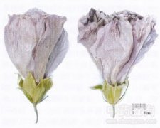

木槿花

拼音
Mù Jǐn Huā
别名
篱障花、清明篱、白饭花、鸡肉花、猪油花、朝开暮落花
来源
为锦葵科木槿属植物木槿Hibiscus syriacus L.的花。夏季晴日采摘盛开花朵，晒干。
生境分布
产江苏、湖北、四川、河南、河北、陕西等地。
药材特点
木槿 落叶灌木，高3-4m。小枝密被黄色星状绒毛。叶互生；叶柄长5-25mm，被星状柔毛；托叶线形，长约6mm，疏被柔毛；叶片菱形至三角状卵形，长3-10cm，宽2-4cm，具深浅不同的3裂或不裂，先端钝，基部楔形，边缘具不整齐齿缺，下面沿叶脉微被毛或近无毛。花单生于枝端叶腋间，花梗长4-14mm，被星状短绒毛；小苞片6-8，线形，长6-15mm，宽1-2mm，密被星状疏绒毛；花萼钟形，长14-20mm，密被星状短绒毛，裂片5，三角形；花钟形，淡紫色，直径5-6cm，花瓣倒卵形，长3.5-4.5cm，外面疏被纤毛和星状长柔毛；雄蕊柱长约3cm；花柱枝无毛。蒴果卵圆形，直径约12mm，密被黄色星状绒毛。种子肾形，背部被黄色长柔毛。花期7-10月。
性状
干燥花卷缩呈卵形或圆柱形团状，长约3厘米，直径约1.5厘米。底部有灰绿色的花萼，表面密生细小绒毛，边缘5裂。花萼外面有数条灰绿色的线形苞片。常有短花柄。花瓣白色，有5片或多数层叠，皱缩卷折。中间有黄色花蕊，系多数雄蕊联合成圆筒状，包围雌蕊。质轻，微香，味甘。以朵大、色白者为佳。
性味
甘，平。
功能主治
清热凉血，解毒消肿。用于痢疾，痔疮出血，白带；外用治疮疖痈肿，烫伤。
用法用量
2～4钱；外用适量，研粉麻油调搽患处。
化学成分
含皂草黄甙（saponarin）、肌醇（ inositol）、粘液质。
药理作用
1：花对致病大肠杆菌及痢疾杆菌均无明显的抑菌作用
2：花煎剂口服对兔之毒性不大
3：动物试验证明花粉有致敏作用
摘录
《全国中草药汇编》